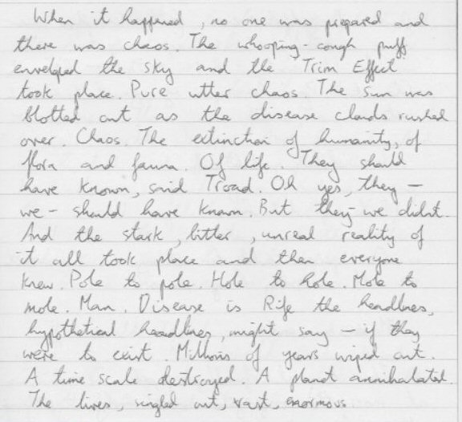

Sunday, June the 9th, 2013
back to: title, date or indexes
My sister recently unearthed a trunk crammed with stuff from forty years ago, when she moved to the United States. It had remained unopened since she moved to her present address some thirty years ago. Within, among other things, she found a notebook containing some early writings by Mr Key.
Here is the beginning of a piece called “-En”. I should point out that I have absolutely no memory of it at all. The notebook is undated, but I would guess it to be from the mid-1970s. That being so, it is no surprise to find it imbued with the earnest seriousness of teenpersonhood, though I am pleased to note that it includes a hint of the love of words for their own sake. Make of it what you will.
(Click to enlarge.)

Hooting Yard on the Air, June the 13th, 2013 : “Fire-Priestess” (starts around 15:32)